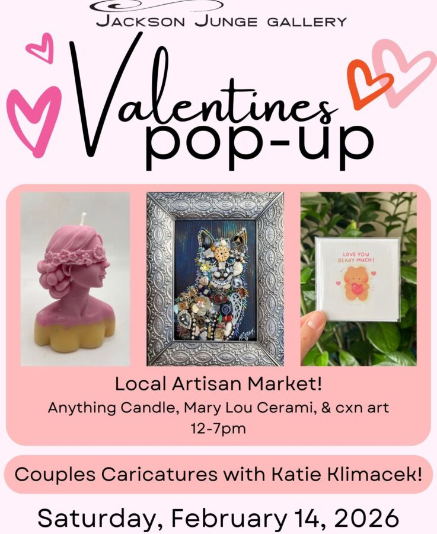

Valentine’s Day Artisan Market
Jackson Junge Gallery is excited to host local artisans for their one day pop-up event on Valentine’s Day. Shop local featuring candles by Anything Candle, vintage jewelry and art by Mary Cerami, and digital art prints by cxn art. The gallery will also be hosting caricature artist Katie Kilmacek. Stop in to enjoy a day full of love and shop local!